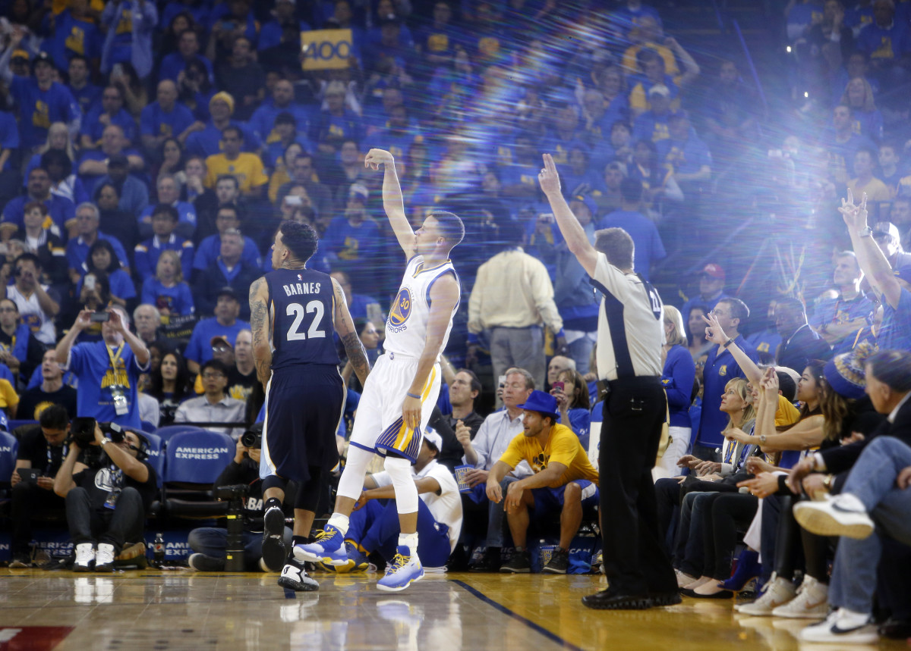

Basketball is one of the most popular sports in the United States and around the world. The goal of the game is simple: put the ball through a circular net. This simplicity makes it widely accessible and easy for anyone to pickup. While it is simple to learn and play, the ceiling of mastery is high.
One of the most important mechanics in basketball is shooting. Over the years, there have been some legendary shooters to emerge in the game of basketball. One of those names is Steph Curry, aka the "Lightskin Legend" aka "The Baby Face Assassin." Steph Curry is regarded by most as the greatest 3-pt shooter of all time. He is credit with single handledly changing the game of basketball, and has inspired millions of people around the world to pickup a basketball– or just be better versions of themselves.
That's what sports is really about.
My favorite "mode" of basketball (since, many variants of games involving a basketball exist apart from the official version played at the pro level) is 5 on 5. I also enjoy playing 1-on-1 against my friends.
I've spent many hours at the Auburn Recreation and Wellness Center playing basketball against friends and complete strangers. On the basketball court, there is a sense of comraderie between players, and also fierce competition at times.
For me, basketball checks three boxes: It's something fun to do and relieve stress, it's good exercise, and it's a way of socializing with others.
